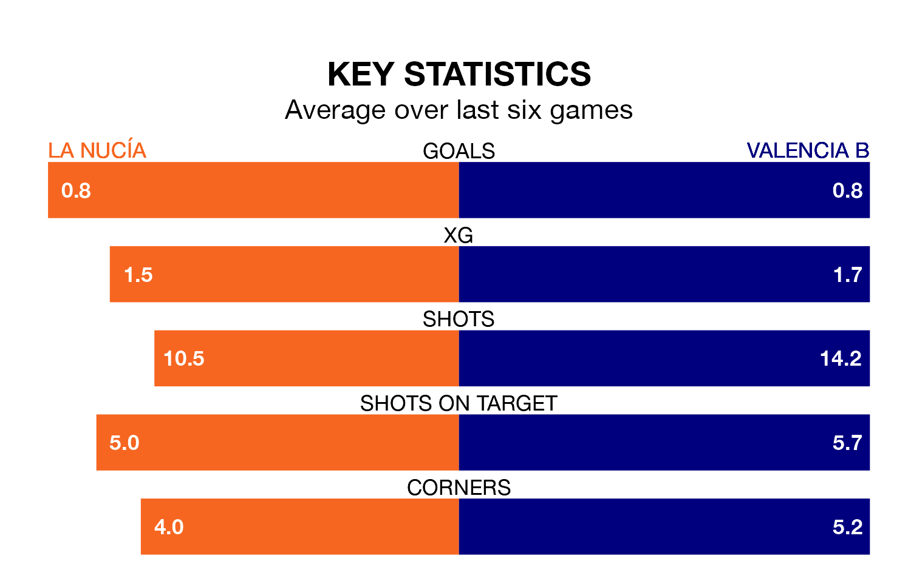

La Nucía are on a terrible run ahead of hosting Valencia B at the Estadio Camilo Cano on Sunday, with just one point collected from their last six games.
La Nucía have picked up just one draw in their last six Segunda División RFEF Group 3 games, and face a Valencia B side whose last six games have brought three wins and one draw.
La Nucía are bottom of the table after 27 games, of which they have won three and drawn eight, earning 17 points.
Valencia B are seven places ahead of la Nucía in 11th, with nine wins and seven draws putting them on 34 points.
With 18 goals in 27 games so far this season, the hosts are the league's lowest scorers with 0.7 goals per game. And they are conceding more than average, letting in 45 goals at a rate of 1.7 per game.
The away side, meanwhile, are average scorers, with 1.2 goals per game. They have conceded 1.1 goals per game.
In the last five years, La Nucía and Valencia B have played each other on five occasions. Valencia B won two of them and they drew three times.
On average, la Nucía scored 0.6 goals and Valencia B 1.0 in those matches.
Their last meeting was on November 12, when Valencia B won 3-2 at home.
La Nucía's last match was on March 16, a 0-0 draw against Hércules CF.
Valencia B beat Espanyol B 3-2 last time out, on March 17, with Diego Aznar Valero (two) on the scoresheet.
Updated: 10:19 (UTC), 22/03/24